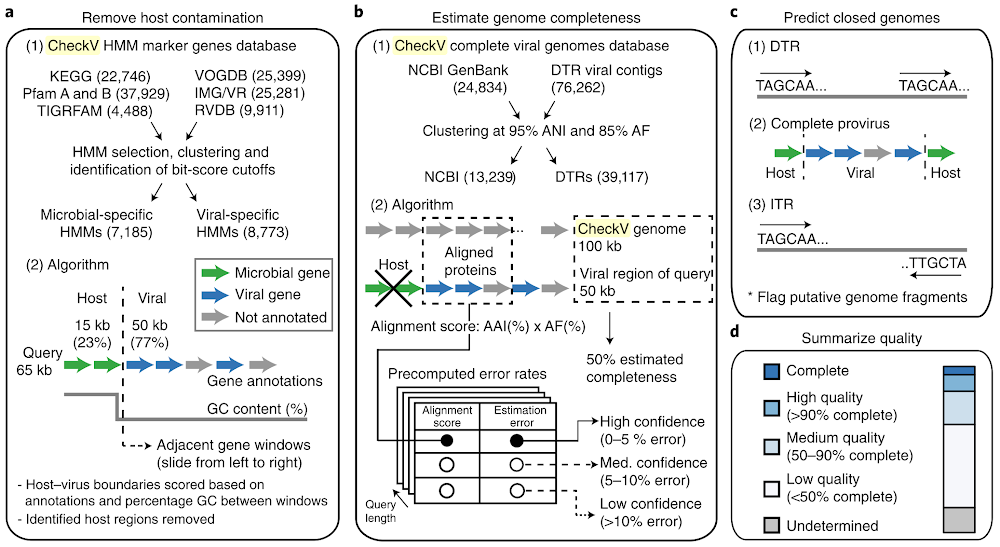

06: Viral inference quality control with CheckV
This directory contains scripts and configuration files to run CheckV on viral inferences as part of a viral inference pipeline using an LSF job scheduler.
The launcher script run_checkv.sh submits a job array to the LSF scheduler, where each job in the array processes a different sample from the input list through the 06_checkv.lsf job script. The configuration file config.sh allows you to set parameters such as the input list of samples, working directory, and paths to necessary containers and pass them on to the launcher and the job script.
Files in this directory
run_checkv.sh: This is the main launcher script that submits the job array to the LSF scheduler.06_checkv.lsf: This is the LSF job script that runs checkv on the raw sequencing reads for each sample.config.sh: This configuration file allows you to set parameters such as the input list of samples, working directory, and paths to necessary containers.
How to use these scripts
- Modify the
config.shfile to set the appropriate paths and parameters for your analysis. - Run the
run_checkv.shscript to submit the job array to the LSF scheduler. - Monitor the job status using LSF commands (e.g.,
bjobs,bpeek, etc.) to check the progress of the checkv analyses.
Prerequisites
- Access to an HPC cluster with LSF job scheduler.
- Apptainer/Singularity installed on the cluster.
- CheckV container available on the cluster.
- Paired reads cleaned with trimmomatic files available in the specified working directory.
Output
The CheckV results for each sample will be saved in the specified output directory within the working directory. Each sample will have its own subdirectory containing the identified viral sequences and related files.
About CheckV
CheckV is a tool designed to assess the quality and completeness of viral genomes assembled from metagenomic data. It estimates genome completeness, identifies potential contamination, and classifies viral sequences into quality tiers. For more information, visit the CheckV documentation.
To summarize, CheckV uses virus marker genes and knowledge about the basic structure of viruses to access overall quality by identifying ends, completeness, and how strongly genes of the contigs look viral.
Do not expect CheckV to agree 100% with any virus prediction tools. They were benchmarked with different viruses, they use different databases, and viruses are weird (don’t expect them to always match your expectations!).
CheckV Workflow
The figure below illustrates the CheckV computational workflow for assessing the quality and completeness of viral genomes:

Workflow Overview
CheckV employs a multi-step process to evaluate viral contigs through contamination removal, completeness estimation, genome structure prediction, and quality summarization.
Panel a: Remove Host Contamination
Step 1: CheckV HMM Marker Genes Database
CheckV uses several curated databases of hidden Markov models (HMMs):
- KEGG (22,746 models)
- VOGDB (25,399 models)
- Pfam A and B (37,929 models)
- IMG/VR (25,281 models)
- TIGRFAM (4,488 models)
- RVDB (9,911 models)
These databases undergo HMM selection, clustering, and identification of bit-score cutoffs to generate two categories: - Microbial-specific HMMs (7,185 models) - Viral-specific HMMs (8,773 models)
Step 2: Contamination Detection Algorithm
For a query sequence (65 kb in the example):
- Genes are annotated as microbial (green arrows), viral (blue arrows), or unannotated (gray arrows)
- Host regions are defined as 15 kb windows with ≥23% microbial genes
- Viral regions are defined as 50 kb windows with ≥77% viral genes
- GC content percentage is calculated across the sequence
- Adjacent gene windows are analyzed (sliding from left to right)
- Host-virus boundaries are scored based on gene annotations and GC content differences between windows
- Identified host regions are removed from the sequence
Panel b: Estimate Genome Completeness
Step 1: CheckV Complete Viral Genomes Database
Two reference databases are used:
- NCBI GenBank complete viral genomes (24,834 sequences)
- DTR (Direct Terminal Repeat) viral contigs (76,262 sequences)
These are clustered at 95% Average Nucleotide Identity (ANI) and 85% Alignment Fraction (AF) to generate:
- NCBI representatives (13,239 genomes)
- DTR representatives (39,117 genomes)
Step 2: Completeness Estimation Algorithm
The query sequence is compared against the CheckV genome database:
- Aligned proteins from the query are compared to reference genomes (e.g., 100 kb reference)
- A 50 kb viral region of the query is identified
- Alignment scores are calculated using AAI% (Amino Acid Identity) × AF% (Alignment Fraction)
- Precomputed error rates combine alignment score and estimated error to assign confidence levels:
- High confidence: >90% complete (5-10% error)
- Medium confidence: 50-90% complete (5-10% error)
- Low confidence: <50% complete (>10% error)
- Query length relative to reference determines estimated completeness (e.g., 50% estimated completeness)
Panel c: Predict Closed Genomes
Step 1: DTR (Direct Terminal Repeat)
Identifies circular genomes by detecting direct terminal repeats:
TAGCAA... [viral sequence] ...TAGCAASequences with matching terminal repeats are flagged as closed circular genomes.
Step 2: Complete Provirus
Detects integrated prophages within host sequences:
Host → Viral genes → HostComplete proviruses are identified when viral genes are flanked by host sequences on both ends.
Step 3: ITR (Inverted Terminal Repeat)
Identifies genomes with inverted terminal repeats:
TAGCAA... [viral sequence] ...TTGCTAITRs indicate closed linear genomes or potentially circular genomes.
These structural features flag putative complete genome fragments.
Panel d: Summarize Quality
CheckV assigns quality tiers to viral contigs based on completeness estimates:
- Complete: Closed genomes (DTR, ITR, or complete provirus detected)
- High quality: ≥90% complete
- Medium quality: 50-90% complete
- Low quality: <50% complete
- Undetermined: Completeness cannot be reliably estimated
This quality assessment helps researchers prioritize high-confidence viral genomes for downstream analyses such as annotation, taxonomy assignment, and comparative genomics.
Summary
CheckV integrates marker gene analysis, reference database comparisons, and structural predictions to provide comprehensive quality assessment of viral contigs. By removing host contamination, estimating completeness, detecting genome structures, and summarizing quality, CheckV enables researchers to confidently identify high-quality viral genomes from metagenomic assemblies.
Parameters used in this pipeline:
end_to_end: This command runs the full CheckV pipeline, which includes estimating genome completeness, identifying potential contamination, and classifying viral sequences into quality tiers.- Input file: This is the path to the input FASTA file containing viral sequences to be analyzed. In this case, it points to the VirSorter2 output file containing categories 1 and 2 viral sequences.
- Output directory: This is the path to the output directory where CheckV will save the results of the analysis for the specified sample.
-t: This option sets the number of threads to be used for the analysis, allowing for parallel processing and faster execution. Default is set to 2 threads.-d: This option specifies the path to the CheckV database, which contains reference data used for quality assessment and classification of viral sequences.